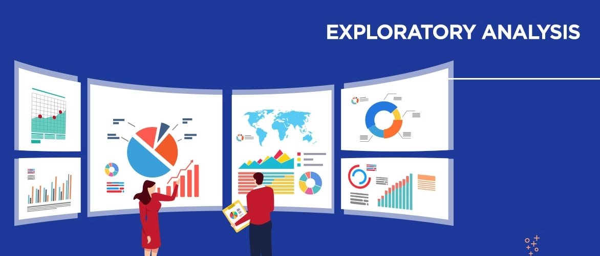

Basic Python Projects
Projects like Dream Premier League and Decoding aliens tested my knowledge with topics like:
1. Integers, Floats & Booleans
2. Introduction to Strings
3. Introduction to Lists
4. Tuples, Sets & Dictionaries
5. Statements, Indentation & Conditionals
Advanced Python Projects
Projects like Intersection of Lists and Functions tested my knowlege with topics like:
1. Loops and Iterations
2. List Comprehension
3. Functions & Methods
4. Production Grade Programming
5. Competitive Coding

Exploratory Data Analysis
Projects like EDA on IMDB Dataset and EDA on Cricket Scorecard tested my knowlege with topics like:
1. Introduction to Numpy
2. Introduction to Pandas
3. Pandas Operations
4. Data Wrangling
5. Introduction to Data Visualization
6. Space & Time Complexity

Airbnb Booking Analysis
Business Context -
Since 2008, guests and hosts have used Airbnb to expand on travelling possibilities and present a
more unique, personalised way of experiencing the world. Today, Airbnb became one of a kind
service that is used and recognized by the whole world. Data analysis on millions of listings
provided through Airbnb is a crucial factor for the company. These millions of listings generate a
lot of data - data that can be analysed and used for security, business decisions, understanding
of customers and providers' (hosts) behaviour and performance on the platform, guiding
marketing initiatives, implementation of innovative additional services and much more. This
dataset has around 49,000 observations in it with 16 columns and it is a mix of categorical and
numeric values. Explore and analyse the data to discover key understandings.
Main Libraries Used :
1. Pandas for data manipulation, aggregation.
2. Matplotlib and Seaborn for visualisation and behaviour with respect to the target variable. Use at least 5 different visualisations.
3. NumPy for computationally efficient operations

Data Analysis using SQL
Used Structured Query Language (SQL) to extract and analyze data stored in superstore database. I first learned to extract data, join tables together, and perform aggregations. Then learned to do more complex analysis and manipulations using subqueries, temp tables, and window functions. At the end of the project, I'm able to write efficient SQL queries to successfully handle a variety of data analysis tasks.

Probability and Statistics
Gradient descent is an algorithm used to the find local minima of any differentiable function. More formally, given a differentiable function $f(x),$ the gradient descent algorithms helps us compute $x^*$ such that $f'(x^*) = 0$ and $x^*$ is a minimum of $f(x).$ A function can have many local minima $x_{1}^{*}, x_{2}^{*}, \ldots, x_{k}^{*},$ the gradient descent algorithm will converge to one of them depending on the its starting position and learning rate (discussed below).
The name "Gradient Descent" hints at how this algorithm works. The algorithms requires 1) knowing the $\textbf{gradient}$ (partial derivatives) of the function and 2) using the gradient to determine the direction of steepest $\textbf{descent}.$ The idea is that we will begin somewhere on the function, for example $f(x_{1})$, and then climb down the function as quickly as possible towards the first valley (local minimum) where $f'(x^*) = 0.$ The gradient descent algorithm essentially describes the sequence of steps to take to go from $x_{1}$ to a local minimum $x^*.$
Gradient descent (or a variation) is very commonly used to train machine learning models by minimizing some objective function. Many of the objective functions in machine learning are hard to minimize analytically, but we can approximate the minimum using gradient descent.